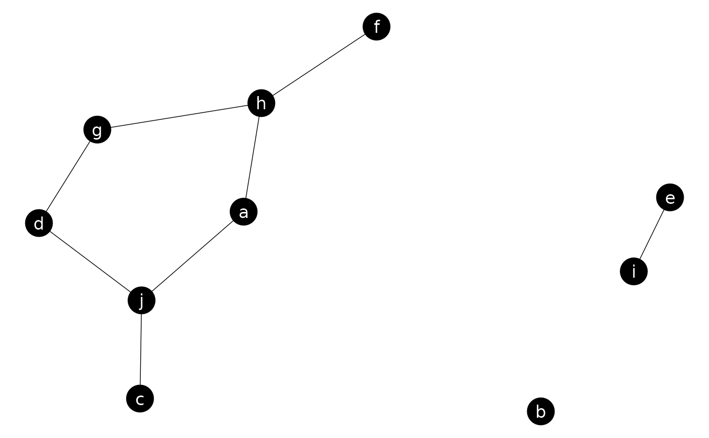
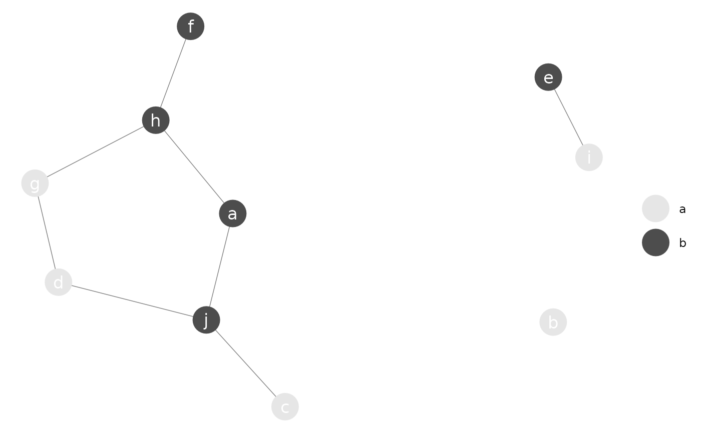
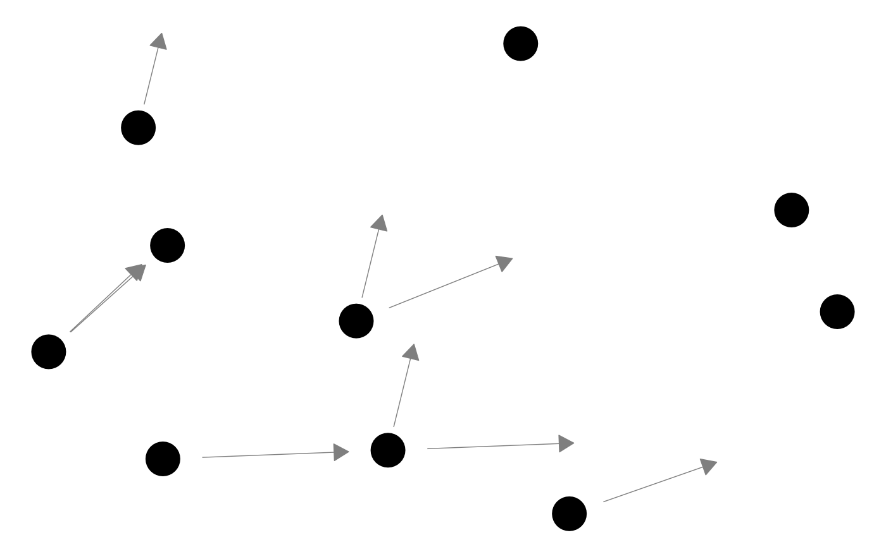

Function for plotting network objects using ggplot2, now replaced by the
ggnet2 function, which provides additional control over
plotting parameters. Please visit https://github.com/briatte/ggnet for
the latest version of ggnet2, and https://briatte.github.io/ggnet/ for a
vignette that contains many examples and explanations.
ggnet(
net,
mode = "fruchtermanreingold",
layout.par = NULL,
layout.exp = 0,
size = 9,
alpha = 1,
weight = "none",
weight.legend = NA,
weight.method = weight,
weight.min = NA,
weight.max = NA,
weight.cut = FALSE,
group = NULL,
group.legend = NA,
node.group = group,
node.color = NULL,
node.alpha = alpha,
segment.alpha = alpha,
segment.color = "grey50",
segment.label = NULL,
segment.size = 0.25,
arrow.size = 0,
arrow.gap = 0,
arrow.type = "closed",
label = FALSE,
label.nodes = label,
label.size = size/2,
label.trim = FALSE,
legend.size = 9,
legend.position = "right",
names = c("", ""),
quantize.weights = FALSE,
subset.threshold = 0,
top8.nodes = FALSE,
trim.labels = FALSE,
...
)an object of class network, or any object
that can be coerced to this class, such as an adjacency or incidence matrix,
or an edge list: see edgeset.constructors and
network for details. If the object is of class
igraph and the
intergraph package is installed,
it will be used to convert the object: see
asNetwork for details.
a placement method from those provided in the
sna package: see gplot.layout for
details. Also accepts the names of two numeric vertex attributes of
net, or a matrix of numeric coordinates, in which case the first two
columns of the matrix are used.
Defaults to the Fruchterman-Reingold force-directed algorithm.
options to be passed to the placement method, as listed in
gplot.layout.
Defaults to NULL.
a multiplier to expand the horizontal axis if node labels
get clipped: see expand_range for details.
Defaults to 0 (no expansion).
size of the network nodes. If the nodes are weighted, their area is proportionally scaled up to the size set by size.
Defaults to 9.
a level of transparency for nodes, vertices and arrows.
Defaults to 1.
the weighting method for the nodes, which might be a vertex
attribute or a vector of size values. Also accepts "indegree",
"outdegree", "degree" or "freeman" to size the nodes by
their unweighted degree centrality ("degree" and "freeman" are
equivalent): see degree for details. All node weights must
be positive.
Defaults to "none" (no weighting).
the name to assign to the legend created by
weight.
Defaults to NA (no name).
see weight
whether to subset the network to nodes with a minimum size,
based on the values of weight.
Defaults to NA (preserves all nodes).
whether to subset the network to nodes with a maximum size,
based on the values of weight.
Defaults to NA (preserves all nodes).
whether to cut the size of the nodes into a certain number
of quantiles. Accepts TRUE, which tries to cut the sizes into
quartiles, or any positive numeric value, which tries to cut the sizes into
that many quantiles. If the size of the nodes do not contain the specified
number of distinct quantiles, the largest possible number is used.
See quantile and cut for details.
Defaults to FALSE (does nothing).
the groups of the nodes, either as a vector of values or as a
vertex attribute. If set to mode on a bipartite network, the nodes
will be grouped as "actor" if they belong to the primary mode and
"event" if they belong to the secondary mode.
the name to assign to the legend created by
group.
see group
a vector of character strings to color the nodes with,
holding as many colors as there are levels in node.group.
Defaults to NULL, which will assign grayscale colors to each group.
transparency of the nodes. Inherits from alpha.
the level of transparency of the edges.
Defaults to alpha, which defaults to 1.
the color of the edges, as a color value, a vector of
color values, or as an edge attribute containing color values.
Defaults to "grey50".
the labels to plot at the middle of the edges, as a
single value, a vector of values, or as an edge attribute.
Defaults to NULL (no edge labels).
the size of the edges, in points, as a single numeric
value, a vector of values, or as an edge attribute.
Defaults to 0.25.
the size of the arrows for directed network edges, in
points. See arrow for details.
Defaults to 0 (no arrows).
a setting aimed at improving the display of edge arrows by
plotting slightly shorter edges. Accepts any value between 0 and
1, where a value of 0.05 will generally achieve good results
when the size of the nodes is reasonably small.
Defaults to 0 (no shortening).
the type of the arrows for directed network edges. See
arrow for details.
Defaults to "closed".
whether to label the nodes. If set to TRUE, nodes are
labeled with their vertex names. If set to a vector that contains as many
elements as there are nodes in net, nodes are labeled with these. If
set to any other vector of values, the nodes are labeled only when their
vertex name matches one of these values.
Defaults to FALSE (no labels).
see label
the size of the node labels, in points, as a numeric value,
a vector of numeric values, or as a vertex attribute containing numeric
values.
Defaults to size / 2 (half the maximum node size), which defaults to
6.
whether to apply some trimming to the node labels. Accepts
any function that can process a character vector, or a strictly positive
numeric value, in which case the labels are trimmed to a fixed-length
substring of that length: see substr for details.
Defaults to FALSE (does nothing).
the size of the legend symbols and text, in points.
Defaults to 9.
the location of the plot legend(s). Accepts all
legend.position values supported by theme.
Defaults to "right".
deprecated: see group.legend and size.legend
deprecated: see weight.cut
deprecated: see weight.min
deprecated: this functionality was experimental and has
been removed entirely from ggnet
deprecated: see label.trim
other arguments passed to the geom_text object that sets
the node labels: see geom_text for details.
The degree centrality measures that can be produced through the
weight argument will take the directedness of the network into account,
but will be unweighted. To compute weighted network measures, see the
tnet package by Tore Opsahl (help("tnet", package = "tnet")).
ggnet2 in this package,
gplot in the sna package, and
plot.network in the network
package
# Small function to display plots only if it's interactive
p_ <- GGally::print_if_interactive
library(network)
#>
#> ‘network’ 1.18.1 (2023-01-24), part of the Statnet Project
#> * ‘news(package="network")’ for changes since last version
#> * ‘citation("network")’ for citation information
#> * ‘https://statnet.org’ for help, support, and other information
#>
#> Attaching package: ‘network’
#> The following object is masked from ‘package:Hmisc’:
#>
#> is.discrete
# random adjacency matrix
x <- 10
ndyads <- x * (x - 1)
density <- x / ndyads
m <- matrix(0, nrow = x, ncol = x)
dimnames(m) <- list(letters[1:x], letters[1:x])
m[row(m) != col(m)] <- runif(ndyads) < density
m
#> a b c d e f g h i j
#> a 0 0 0 0 0 1 0 0 0 0
#> b 0 0 0 0 0 0 1 0 0 0
#> c 0 0 0 0 0 0 1 0 0 0
#> d 0 0 1 0 0 0 0 0 0 0
#> e 0 1 0 0 0 0 0 0 0 0
#> f 0 0 0 0 0 0 1 0 0 0
#> g 0 0 0 1 0 0 0 0 0 0
#> h 0 0 0 0 0 0 1 0 1 0
#> i 0 0 0 0 0 0 0 0 0 0
#> j 1 0 0 0 0 0 0 0 0 0
# random undirected network
n <- network::network(m, directed = FALSE)
n
#> Network attributes:
#> vertices = 10
#> directed = FALSE
#> hyper = FALSE
#> loops = FALSE
#> multiple = FALSE
#> bipartite = FALSE
#> total edges= 10
#> missing edges= 0
#> non-missing edges= 10
#>
#> Vertex attribute names:
#> vertex.names
#>
#> No edge attributes
ggnet(n, label = TRUE, alpha = 1, color = "white", segment.color = "black")

# random groups
g <- sample(letters[1:3], 10, replace = TRUE)
g
#> [1] "c" "a" "a" "c" "a" "b" "c" "b" "b" "a"
# color palette
p <- c("a" = "steelblue", "b" = "forestgreen", "c" = "tomato")
p_(ggnet(n, node.group = g, node.color = p, label = TRUE, color = "white"))

# edge arrows on a directed network
p_(ggnet(network(m, directed = TRUE), arrow.gap = 0.05, arrow.size = 10))
#> Warning: Removed 2 rows containing missing values (`geom_segment()`).
